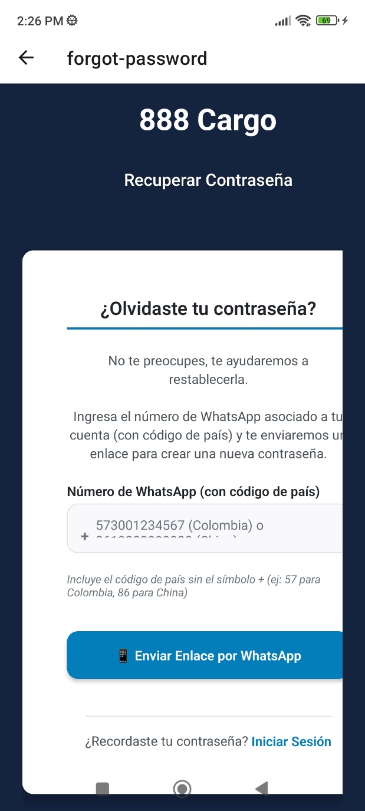
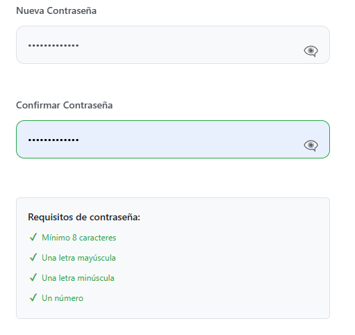
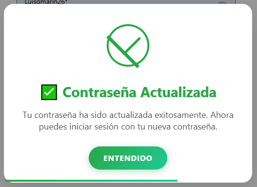
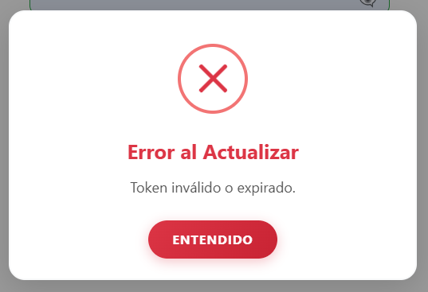
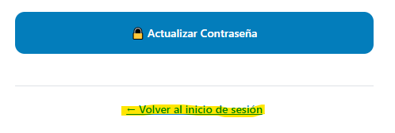

Si ha olvidado su contraseña, puede restablecerla de forma segura mediante un código enviado por WhatsApp.
1
Seleccione la opción de recuperación:
En el formulario de Inicio de Sesion, pulse el enlace “¿Olvidaste tu Contraseña?”.
Captura de pantalla del proceso
2
Identifique su cuenta:
Ingrese el número de Whatsapp asociado a su cuenta de 888Cargo.

Captura de pantalla del proceso
El sistema validará que la cuenta exista y que el número telefónico esté registrado.
3
Confirme el envío del código:
Presione “Continuar”.
El sistema mostrará un mensaje confirmando que se ha enviado un enlace de recuperación a su número de teléfono vía WhatsApp.

Captura de pantalla del proceso
4
Obtenga el código de seguridad:
Abra su aplicación de WhatsApp y verifique el mensaje proveniente de 888Cargo.
Este mensaje incluirá un enlace que lo llevará directamente a la página de restablecimiento de contraseña, válido por 30 minutos.

Captura de pantalla del proceso
5
Verifique el enlace:
Si el tiempo no ha expirado y el enlace es válido, será redirigido a una nueva página de 888Cargo.

Captura de pantalla del proceso
6
Establezca una nueva contraseña:
Al abrir en enlace, se habilitarán los campos para crear una nueva contraseña y confirmarla.
Se recomienda usar una combinación de letras, números y símbolos para mayor seguridad. La contraseña no debe tener menos de 8 caracteres. Como soporte, el sistema le mostrara un banner indicando si la contraseña cumple o no con los requisitos anteriores.

Captura de pantalla del proceso
7
Finalice el proceso:
Presione el botón “Actualizar Contraseña”.
Si aun se encuentra dentro del limite de tiempo y el enlace aun es valido, el sistema confirmará que la contraseña se ha restablecido correctamente.

Captura de pantalla del proceso
A partir de este momento, podrá iniciar sesión con sus nuevas credenciales.
En caso contrario, el sistema le mostrara un mensaje indicando cual es el error.

Captura de pantalla del proceso
8
Desestimación:
En caso de arrepentirse o si simplemente ya no desea finalizar el proceso para el cambio de contraseña, puede simplemente regresar a la interfaz de inicio de sesión presionando el botón “Volver al inicio de sesión” ubicado debajo del botón “Actualizar Contraseña”

Captura de pantalla del proceso
Recomendación de Seguridad
No comparta su enlace de recuperación ni su nueva contraseña con terceros.
El equipo de 888Cargo nunca solicitará su enlace o clave por otros medios (correo, llamada o mensaje).
Si sospecha de un intento de fraude, comuníquese inmediatamente con el soporte técnico oficial.
Nota Técnica
El proceso de recuperación utiliza la API oficial de WhatsApp Business para enviar mensajes automáticos de validación.
El enlace de verificación incluye un enlace temporal asociado al número telefónico registrado del usuario.
El backend valida el token con el que se genera el enlace antes de permitir el restablecimiento de la contraseña, garantizando la seguridad del proceso.